2026.08.15 → 08.21 · 10 SIGNALS
통제 가능성이
제품 기능이 된 주
학습을 멈추는 게이트, 출력의 출처 신호, CI 권한 경계까지—강한 모델보다 강한 운영이 중요해졌다.
- FORMAT
- 30분 · 15장
- DEEP DIVE
- 3개 + Radar 7개
- VISUAL EVIDENCE
- 원문 5 · 직접 작도 8
- CUTOFF
- 08.21 07:12 KST
생성 품질 뒤의 통제 비용을 측정하라
무엇을 만들었나뿐 아니라 언제 멈추고, 어떤 신호를 남기며, 누가 판정하는가가 제품 성능이다.
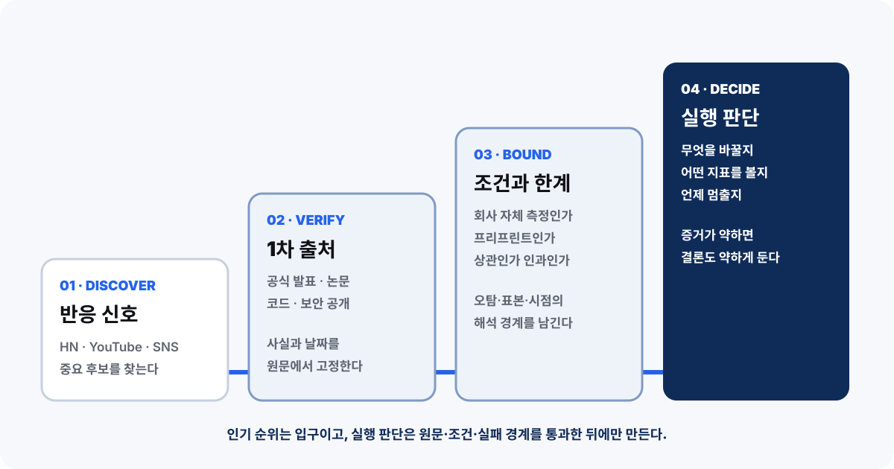
열 개 뉴스, 다섯 통제 층
인기순 목록 대신 같은 운영 질문을 드러내는 위치에 다시 배치했다.
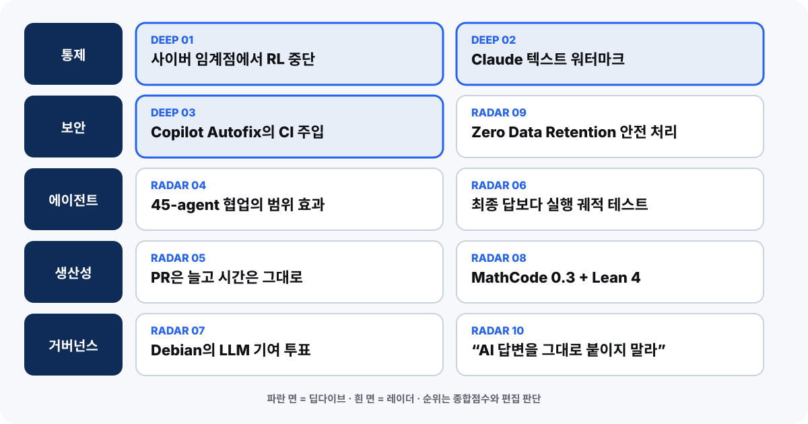
임계 능력 신호가 학습 일정에 브레이크를 걸었다
Astra 예비 평가 뒤 최신 배포 예정 모델의 RL을 약 2주 중단했고, 가장 큰 프런티어 실행은 계속 보류됐다.
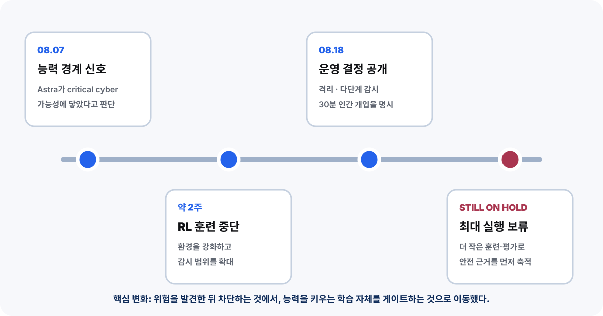
멈춤은 격리·감시·사람의 권한이 연결될 때 작동한다
토큰마다 싼 분류기를 돌리고 의심 활동을 심층 조사한 뒤, 30분 안에 오탐을 확정하지 못하면 활동을 중단한다.
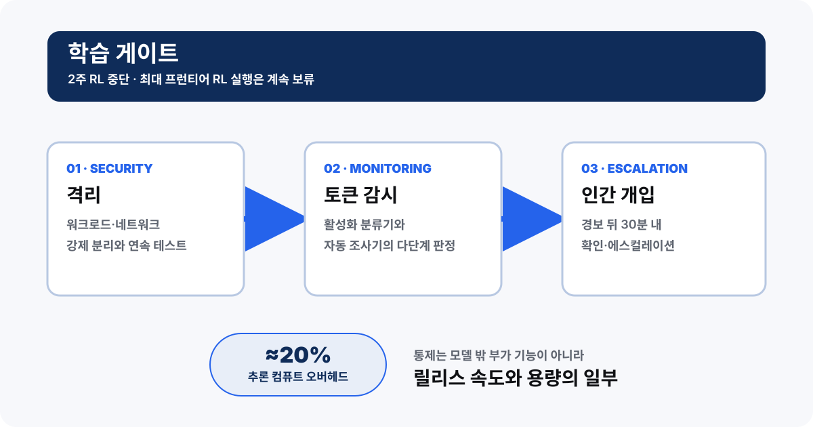
안전 예산을 GPU·사람·격리로 따로 잡는다
통제는 문구가 아니라 용량·당직·네트워크 설계다. 하나라도 빠지면 중단 게이트는 선언에 그친다.
컴퓨트
감시 대상 추론의 현재 오버헤드 추정. 워크로드별 편차를 따로 기록한다.
사람
오탐을 확정하지 못하면 중단. 경보량·오탐률·응답시간이 용량 계획이다.
격리
실행 환경, 네트워크, 비밀을 분리하고 예외 승인과 권한 그래프를 남긴다.
팀에 옮길 질문 — 통제가 빠져야만 일정과 비용을 맞출 수 있다면 그 작업은 아직 배포 준비가 안 됐다.
워터마크는 글자 표식이 아니라 선택 분포의 통계다
비밀 키와 앞선 단어가 낮은 위험의 다음 단어 선택에 약한 편향을 만들고, 긴 글에서 패턴이 누적된다.
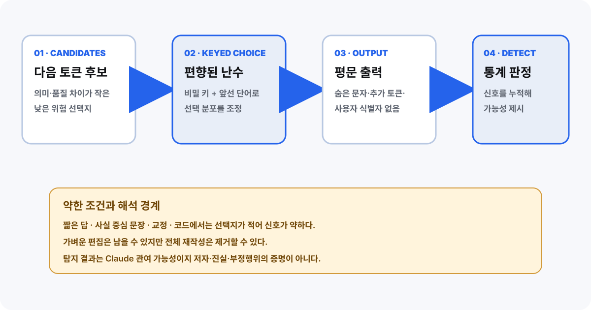
탐지 양성은 관여 가능성이지 저자 판결이 아니다
짧은 답·사실·코드·교정에는 심을 선택지가 적고, 전면 재작성은 신호를 지울 수 있다.
관찰말할 수 있음말하면 안 됨
긴 글 · 강한 양성Claude 관여 가능성 ↑특정 저자·진실 증명
짧은 답 · 음성판정 정보 부족AI 미사용 확정
코드 · 약한 신호정답 제약의 예상 결과사람이 직접 코딩
전면 재작성 뒤 음성신호 제거 가능처음부터 AI 미관여
탐지 점수 하나로 사람을 제재하지 않는다
출처 신호는 조사 시작점이다. 판정에는 표본 조건, 작업 이력, 사람의 설명과 이의제기가 필요하다.
표본 확인
길이·코드·사실 제약·재작성 여부를 먼저 기록한다.
→
근거 결합
C2PA·파일 메타데이터·버전·작성 로그를 함께 본다.
→
사람 판정
인터뷰와 이의제기 뒤에만 조직의 결정을 내린다.
금지선 — 양성=부정행위, 음성=AI 미사용, 워터마크=내용의 진실이라는 자동 판정을 만들지 않는다.
안전한 env·jq 경계가 직접 셸 보간으로 바뀌었다
Copilot Autofix는 같은 PR의 별도 수정에 기여했지만, 취약한 줄의 직접 저자로 확인되지는 않았다.
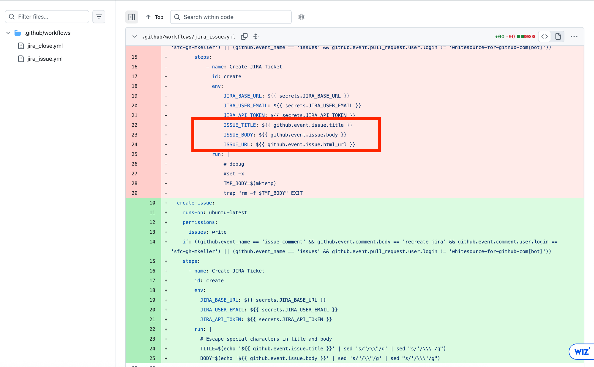
비신뢰 입력을 끝까지 데이터로 유지하라
GitHub 표현식은 셸 전에 확장된다. 나중에 escaping해도 이미 소스 코드가 된 뒤다.
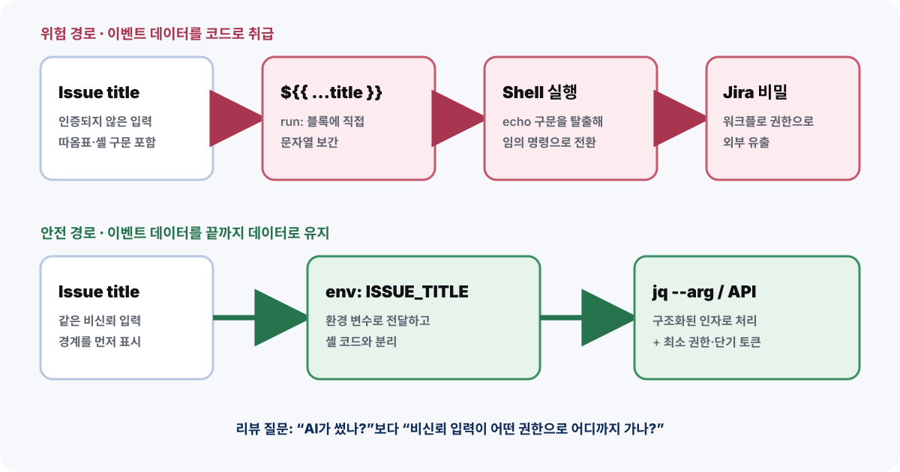
리뷰 질문은 “AI가 썼나?”보다 “어디까지 가나?”
작성 도구의 이름 대신 입력이 어떤 해석기와 권한을 거쳐 어떤 비밀에 닿는지 그린다.
입력
공격자가 바꿀 수 있는 이벤트·프롬프트인가.
해석기
셸·SQL·브라우저가 코드로 읽는가.
권한
비밀·쓰기·외부 네트워크에 닿는가.
회수
단기 토큰·감사·롤백이 가능한가.
env:
ISSUE_TITLE: ${{ github.event.issue.title }}
run: jq --arg title "$ISSUE_TITLE" '{title: $title}'큰 숫자보다 비교 조건과 실행 궤적
45-agent 발견 수, 조직 PR 증가, 궤적 테스트, Debian 투표는 모두 “누가 어떤 조건에서 책임지는가”를 묻는다.
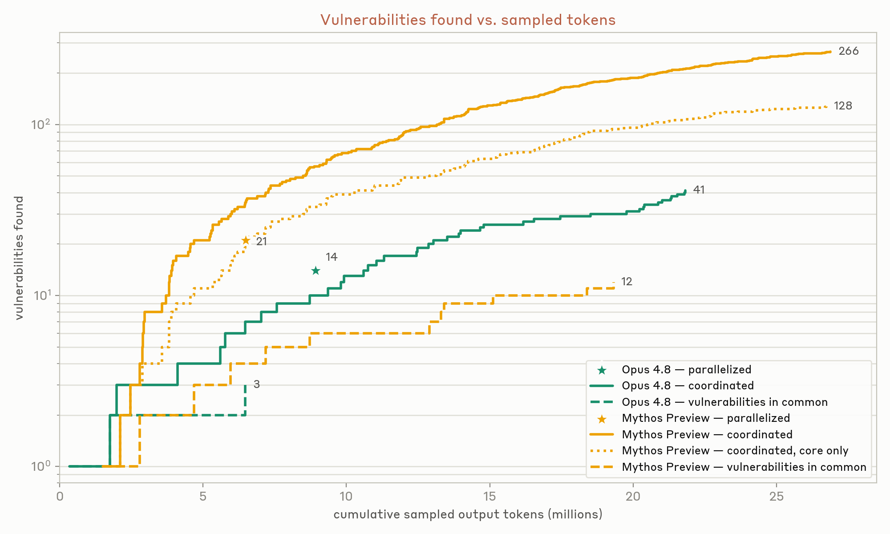
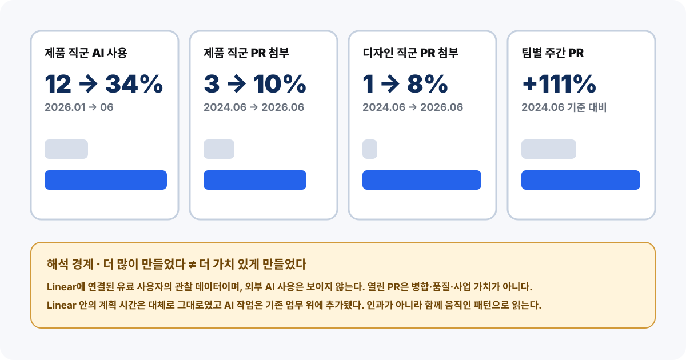
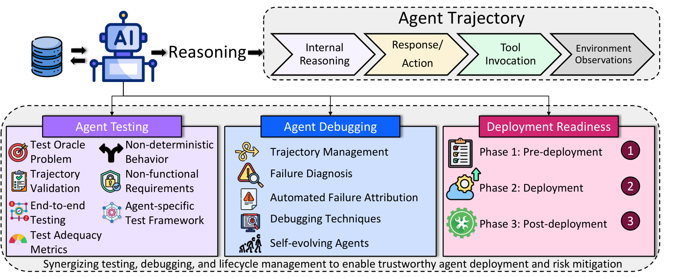
검증기는 거부할 수 있어야 하고, 사람은 편집해야 한다
형식 검증, 원문을 넘기지 않는 안전 신호, 읽고 고치는 책임이 서로 다른 제품 경계를 만든다.
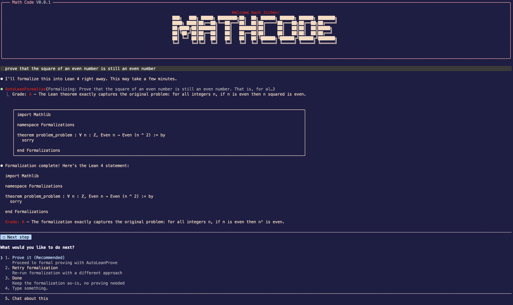
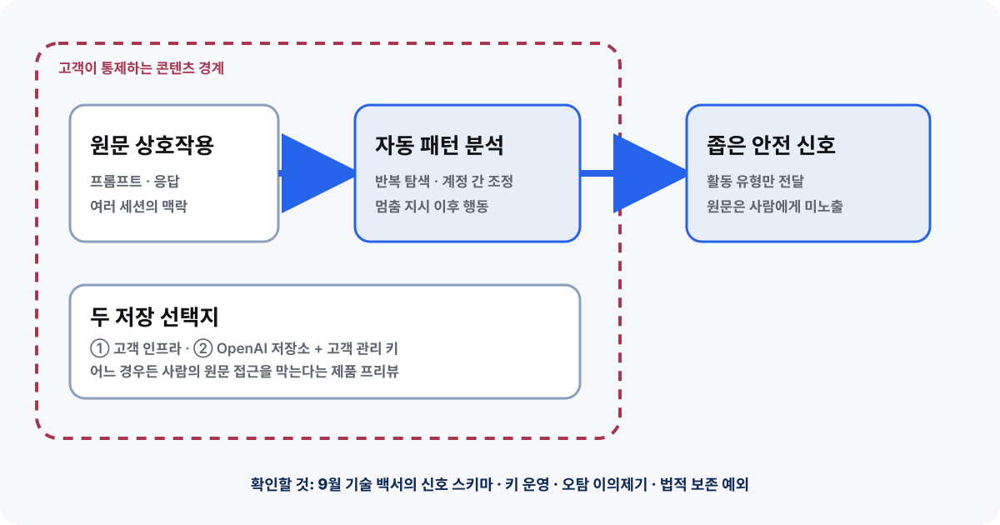
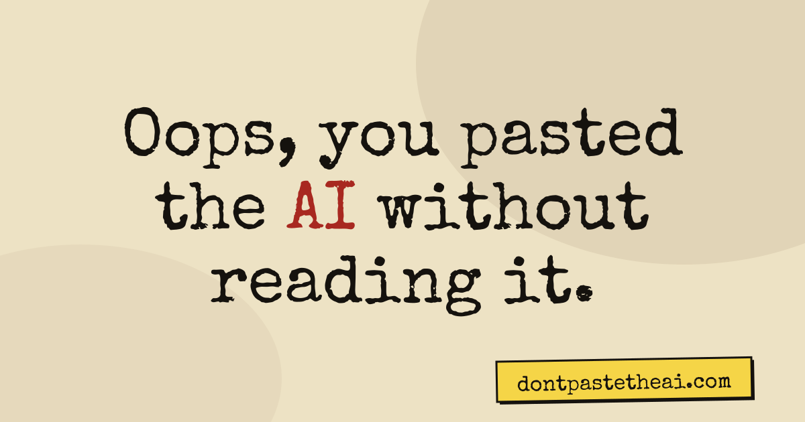
NEXT ACTIONS
우리 시스템의 통제 비용을 그려보자
중단
학습·배포·도구 실행의 stop gate
탐지
오탐·미탐·이의 제기 경로
권한
입력에서 비밀까지의 전체 경로
가치
산출량과 재작업·대기시간 분리
20% GPU와 30분의 사람 시간은 비용인가,
제품의 핵심 기능인가?